Навыки
- UX/UI и веб-дизайн
- UI Kit / библиотеки компонентов
- Графический и печатный дизайн
- AI-инструменты в работе
Проектирую цифровые продукты и создаю графику для онлайн- и офлайн-коммуникаций
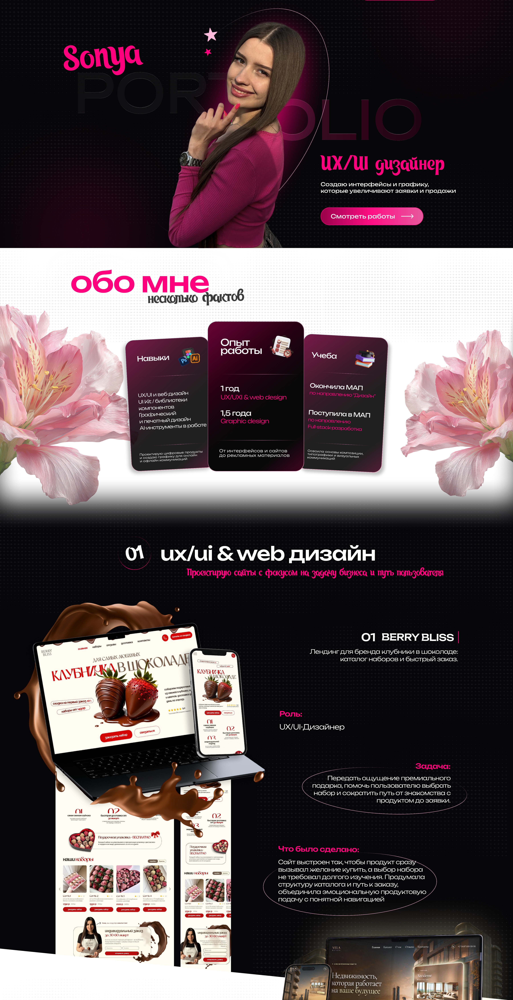
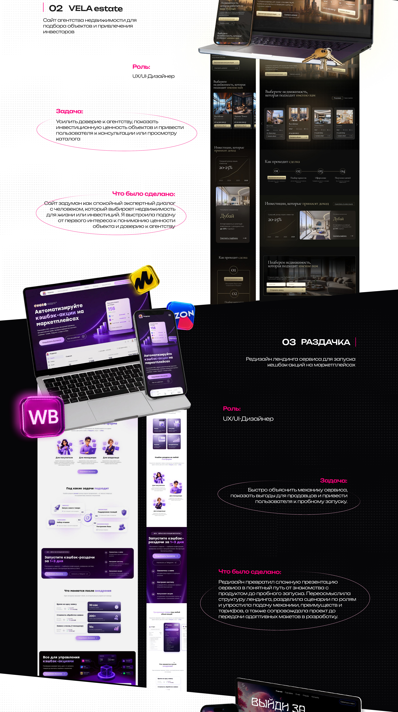


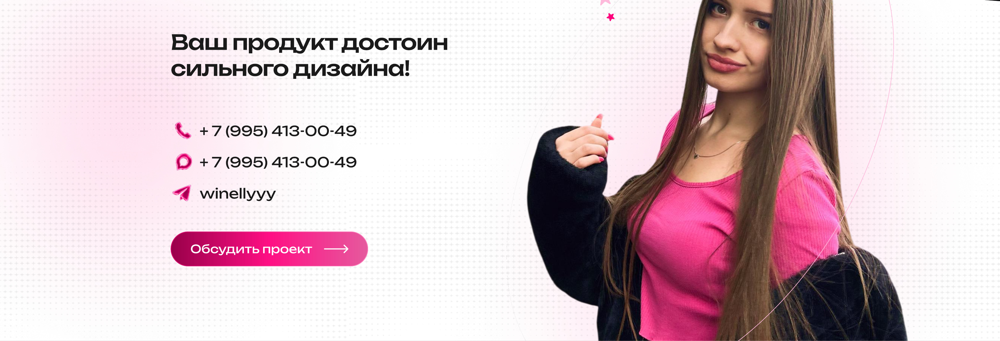
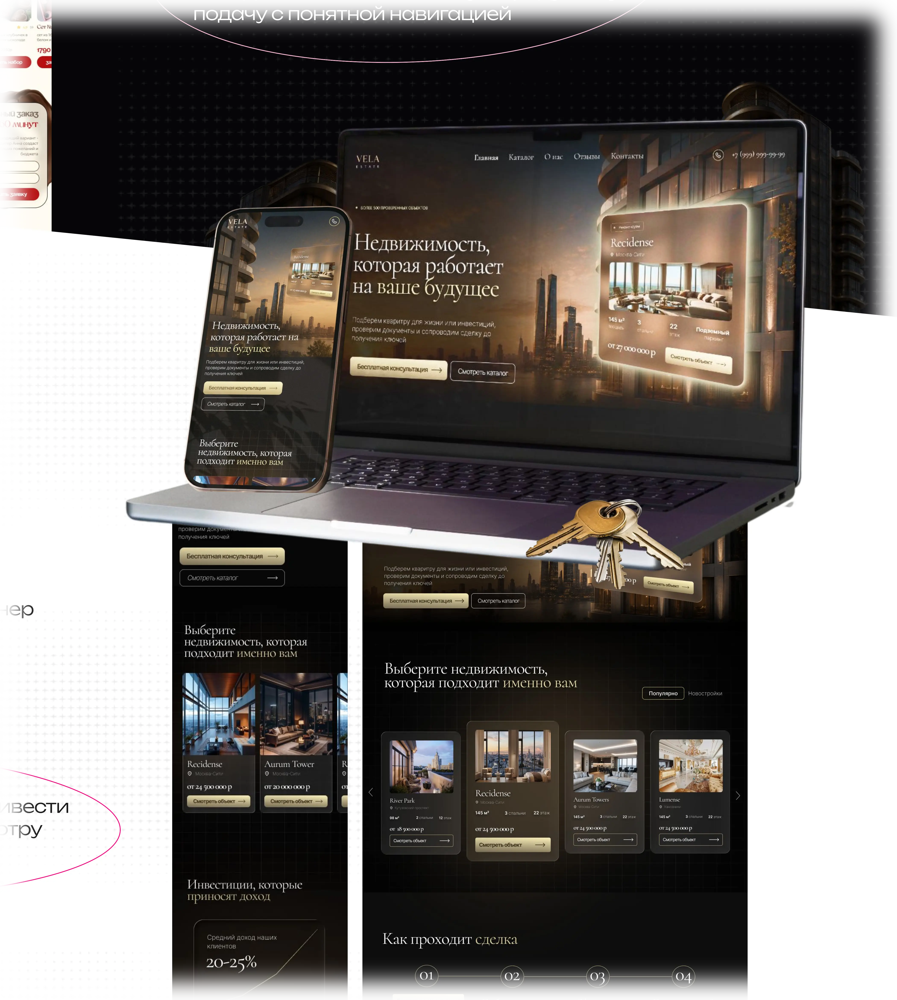
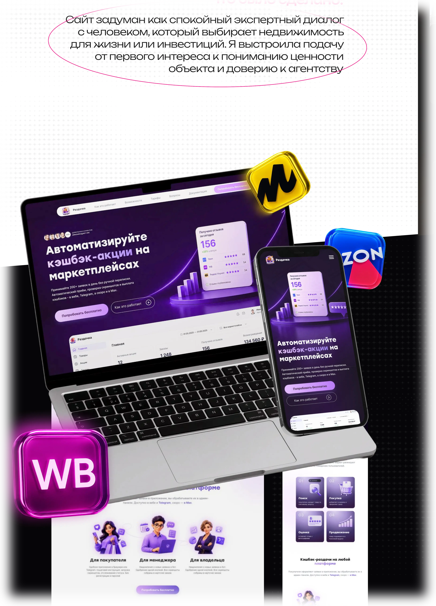
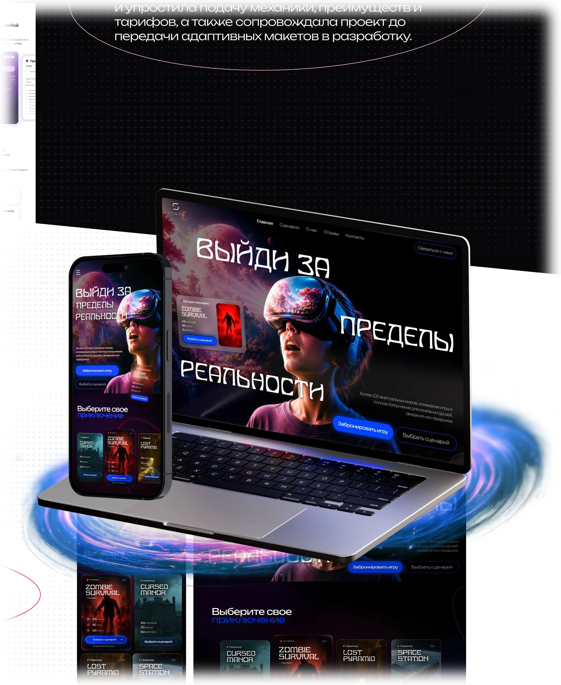
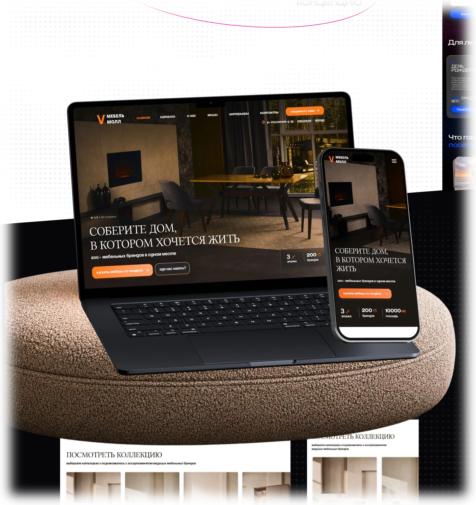
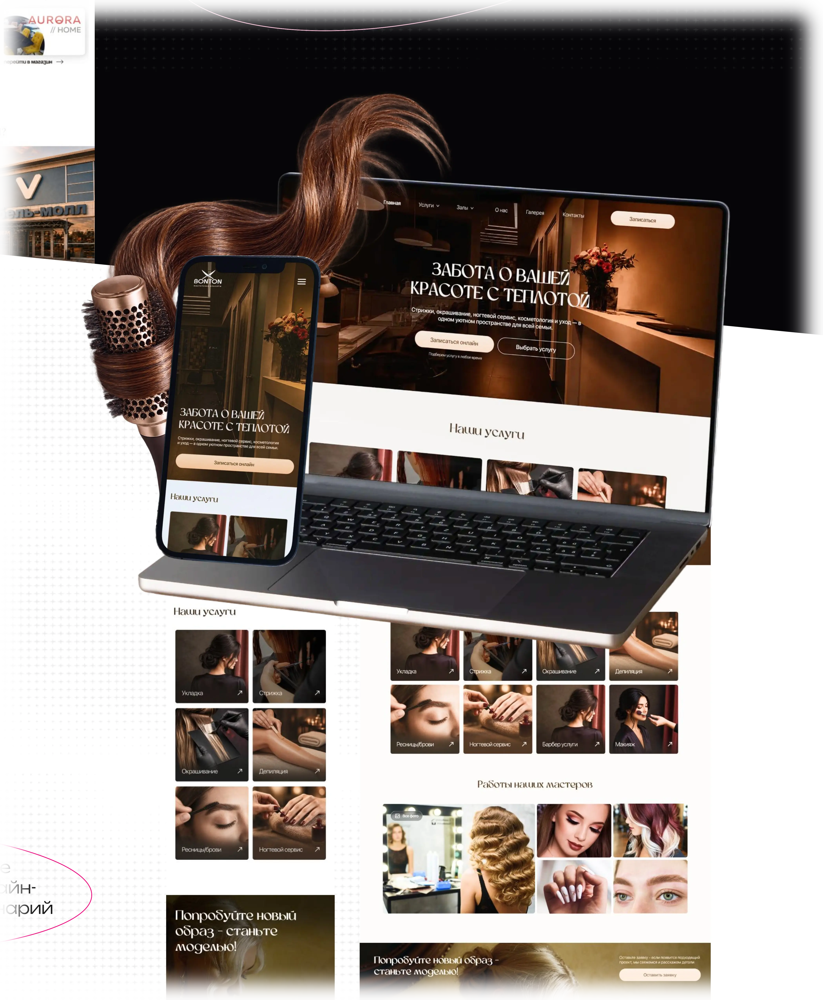
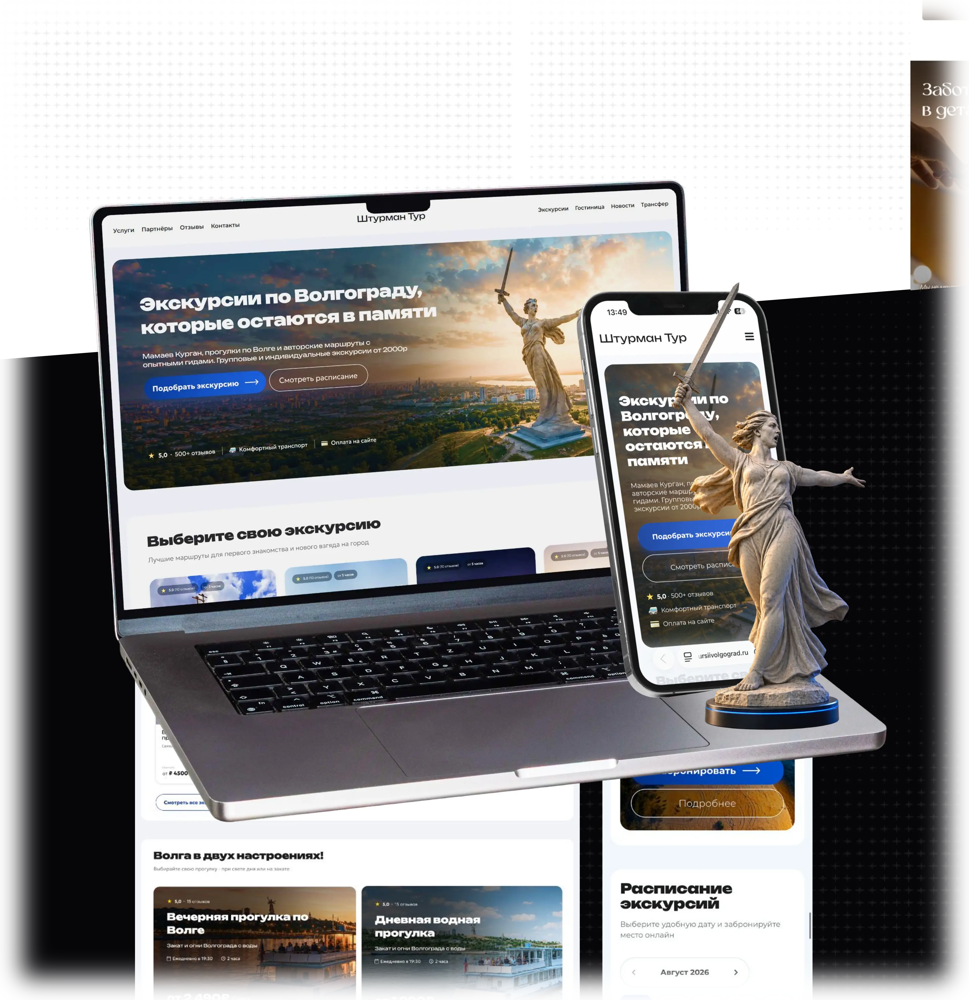
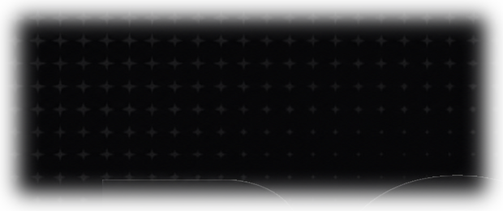
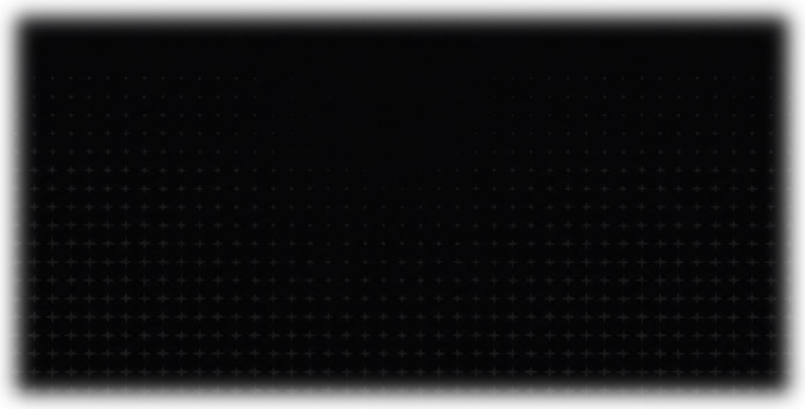
SonyaSonya
Создаю интерфейсы и графику,
которые увеличивают заявки и продажи
Создаю интерфейсы и графику,
которые увеличивают заявки и продажи
несколько фактов
Проектирую цифровые продукты и создаю графику для онлайн- и офлайн-коммуникаций
От интерфейсов и сайтов
до рекламных материалов
Освоила основы композиции, типографики и визуальных коммуникаций
Проектирую сайты с фокусом на задачу бизнеса и путь пользователя
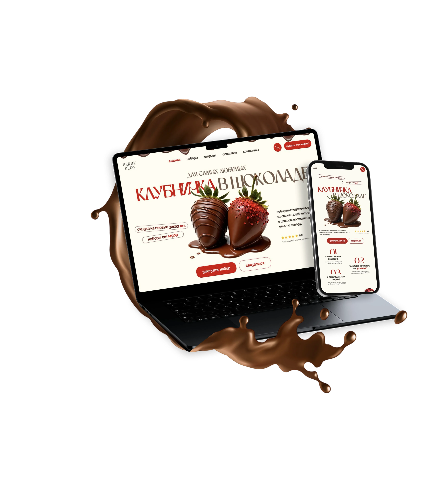
Лендинг для бренда клубники в шоколаде:
каталог наборов и быстрый заказ.
Передать ощущение премиального подарка, помочь пользователю выбрать набор и сократить путь от знакомства с продуктом до заявки.
Сайт выстроен так, чтобы продукт сразу вызывал желание купить, а выбор набора не требовал долгого изучения. Продумала структуру каталога и путь к заказу, объединила эмоциональную продуктовую подачу с понятной навигацией.
Сайт агентства недвижимости для
подбора объектов и привлечения
инвесторов
Усилить доверие к агентству, показать инвестиционную ценность объектов и привести пользователя к консультации или просмотру каталога
Сайт задуман как спокойный экспертный диалог с человеком, который выбирает недвижимость для жизни или инвестиций. Я выстроила подачу от первого интереса к пониманию ценности объекта и доверию к агентству
Редизайн лендинга сервиса для запуска
кешбэк-акций на маркетплейсах
Быстро объяснить механику сервиса, показать выгоды для продавцов и привести пользователя к пробному запуску.
Редизайн превратил сложную презентацию сервиса в понятный путь от знакомства с продуктом до пробного запуска. Переосмыслила структуру лендинга, разделила сценарии по ролям и упростила подачу механики, преимуществ и тарифов, а также сопровождала проект до передачи адаптивных макетов в разработку.
Сайт VR-клуба с каталогом сценариев
и онлайн-бронированием.
Передать эмоции VR, помочь выбрать игру по жанру и поводу и сделать бронирование понятным на любом устройстве
Я объединила эмоциональную атмосферу VR-клуба с понятной логикой выбора и бронирования. Продумала структуру сайта, пользовательские сценарии и визуальную концепцию
Продающий редизайн многостраничного
сайта мебельного магазина
Объединить товары и магазины в понятной структуре, упростить навигацию по ассортименту и сократить путь к покупке или посещению мебельного центра
Редизайн превратил устаревший сайт-витрину в понятный инструмент выбора и покупки мебели. Я переосмыслила пользовательский путь, структуру каталога и визуальный стиль, а также сопровождала проект от согласования решений с клиентом до передачи макетов в разработку
Редизайн сайта салона красоты с
акцентом на уют и доверие
Упростить выбор услуги, усилить доверие к салону и привести пользователя к онлайн-записи через понятный адаптивный сценарий
Редизайн выстроен вокруг главного действия — записи в салон. Я собрала понятный путь от знакомства с брендом до выбора услуги, усилила доверие через портфолио мастеров и атмосферную подачу, а акции встроила в сценарий без перегруза
Редизайн многостраничного сайта сервиса
экскурсий по Волгограду
Упростить выбор экскурсии, помочь сравнить маршруты, быстро увидеть условия поездки и перейти к расписанию или бронированию с любого устройства
Сайт выстроен вокруг выбора маршрута, экскурсии собраны в понятные карточки, важные условия и преимущества вынесены на первый план. Я продумала переход от знакомства с программой к расписанию и бронированию